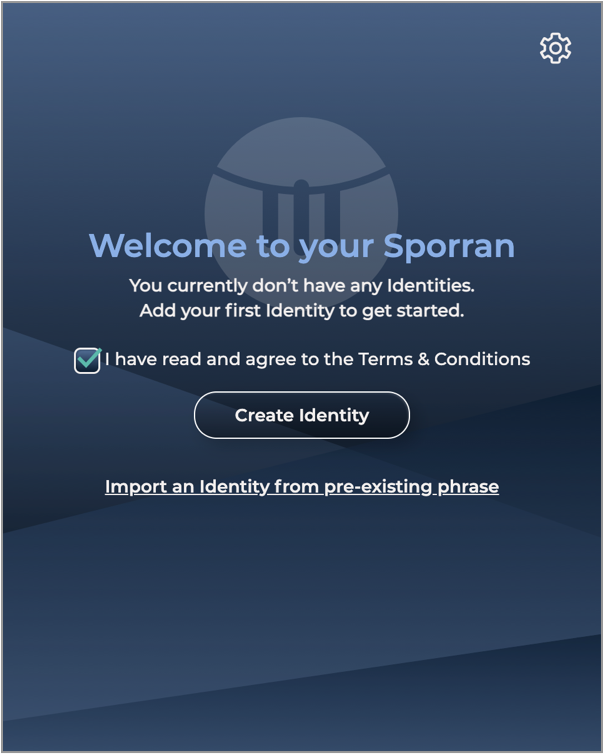
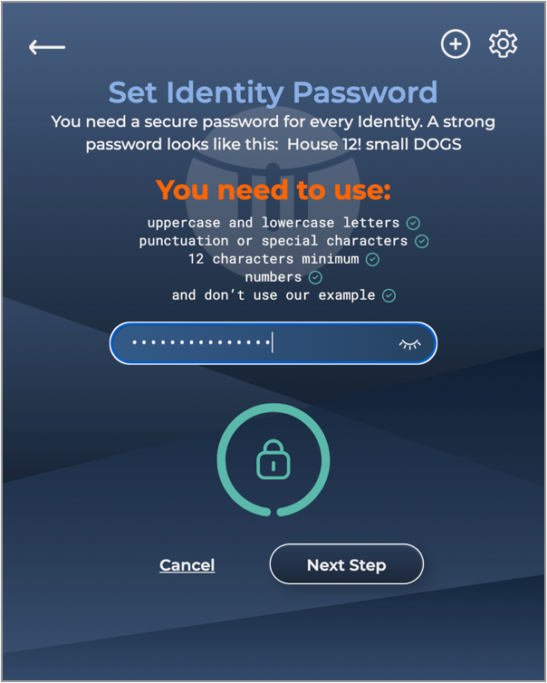
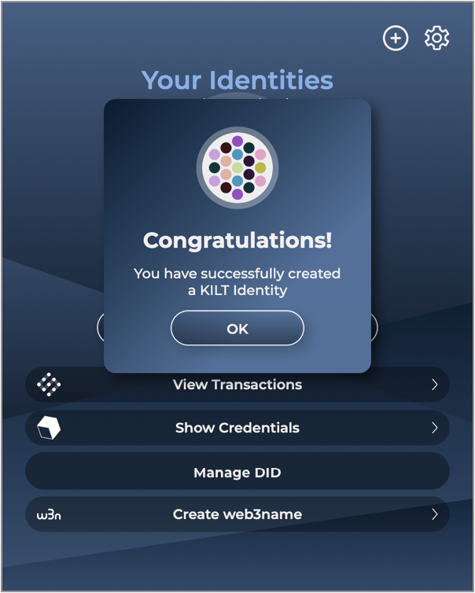
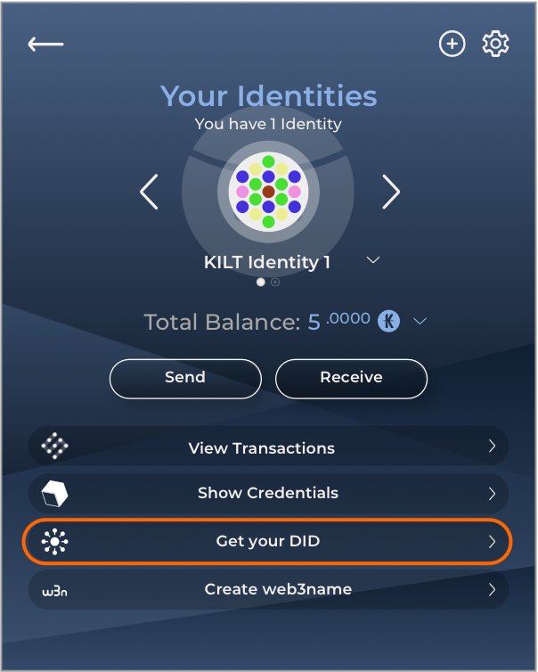
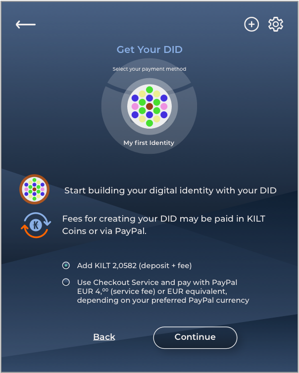
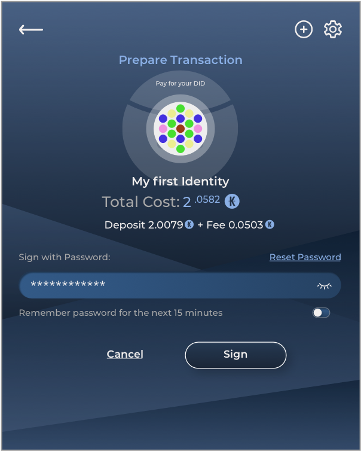
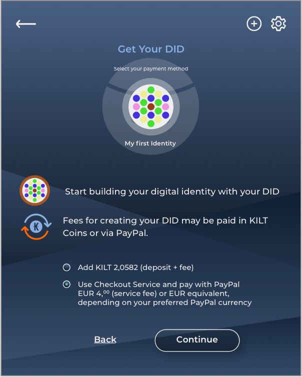
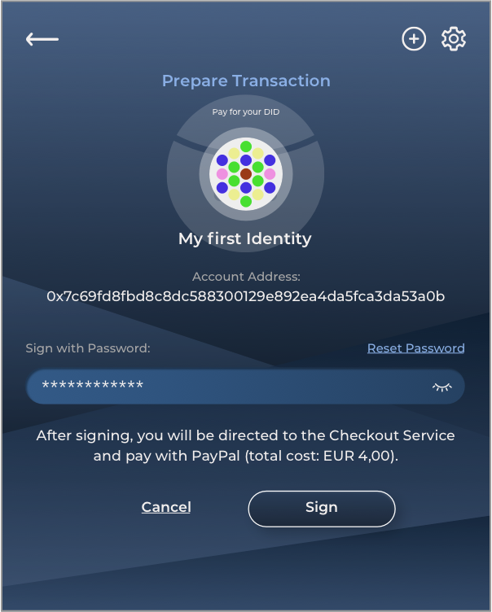

Get your DID
Pay with KILT or use Checkout Service / Paypal
Services - Build your Identity
Your First Step to Creating a Digital Identity
With KILT you can build your identity in a secure way, keeping your data under your control.
Start by generating your DID (decentralized identifier), a string of numbers and letters that is your unique digital fingerprint and the core of your identity.
Once you have your DID, you can start building and using your digital identity with KILT services:
- Give your DID a custom name using web3name
- Add credentials to your DID such as social media accounts, GitHub and email address using SocialKYC
- Sign digital files with your DID in a secure, decentralized way using DIDsign.
Step 1
Use Desktop Browser
Identity on KILT begins with a Sporran wallet. Sporran is available only as a desktop browser extension using Google Chrome or Mozilla Firefox. To proceed, switch to one of these browsers.
Step 2
Download Sporran
Generating a DID requires a Sporran wallet which interacts with the KILT blockchain. Sporran is available as a desktop browser extension on Google Chrome or Mozilla Firefox. Download the wallet for your preferred browser via the links below.
Step 3
Create an Identity
Before you generate your DID, you first need to create an Identity using Sporran. Follow the How-to Guide for complete instructions, and be sure to write down and save your backup phrase and password.
  
Step 4
Get your DID via Sporran
In Sporran, click “Get your DID” then select your preferred payment method:
Pay with KILT
A DID requires a deposit of around 2 KILT and a small transaction fee, so it is recommended to have at least 3 KILT in your account before you proceed. If you decide to delete the DID later the deposit will be refunded to the account that it was paid from.
In Sporran, click “Get your DID” then select “Pay with KILT”. Click “CONTINUE” and sign the transaction for your DID.
  
Pay with PayPal
If you prefer not to pay with KILT, the Checkout Service provided by KILT partner B.T.E. BOTLabs Trusted Entity GmbH manages everything for you. You can use PayPal to pay for this service.
Total cost: EUR 4.00 (including VAT)
(or EUR equivalent, depending on your preferred PayPal currency)
In Sporran, click “Get your DID” then use the Checkout Service and pay with PayPal. Click “CONTINUE” and sign with your password to begin the transaction process.
 